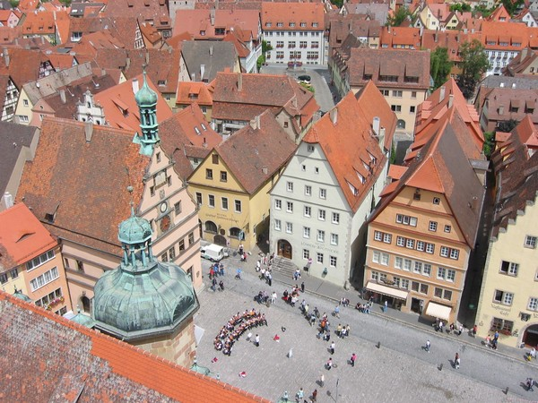
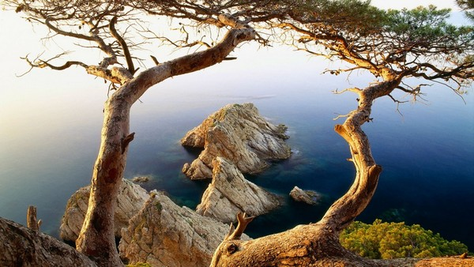
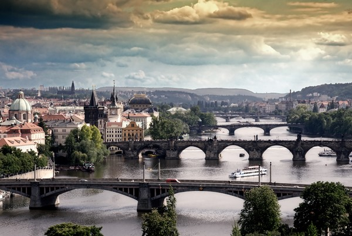
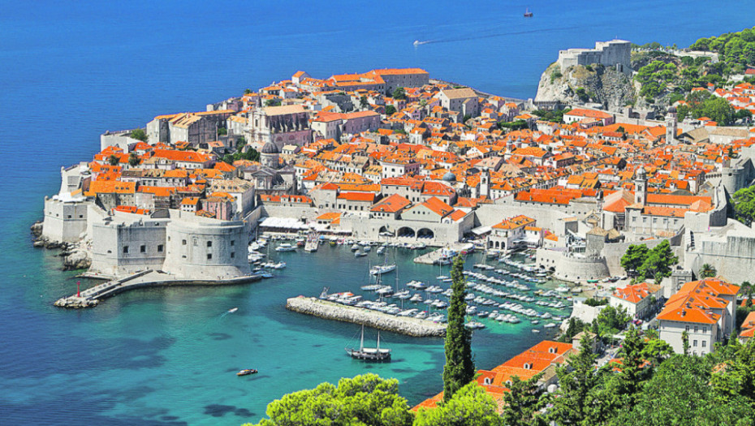
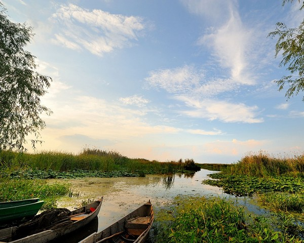
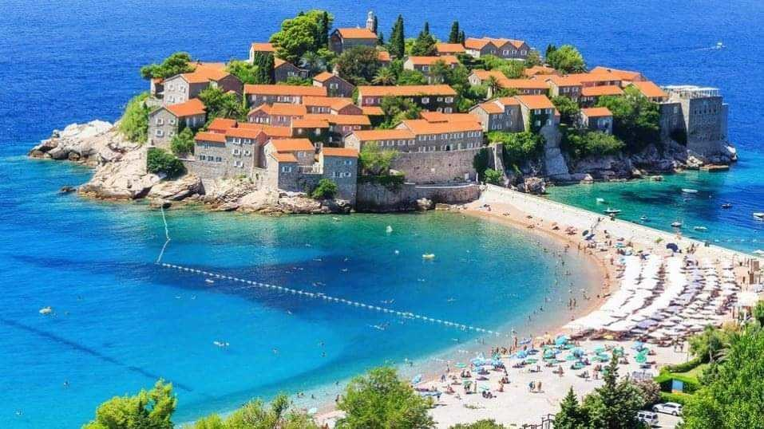
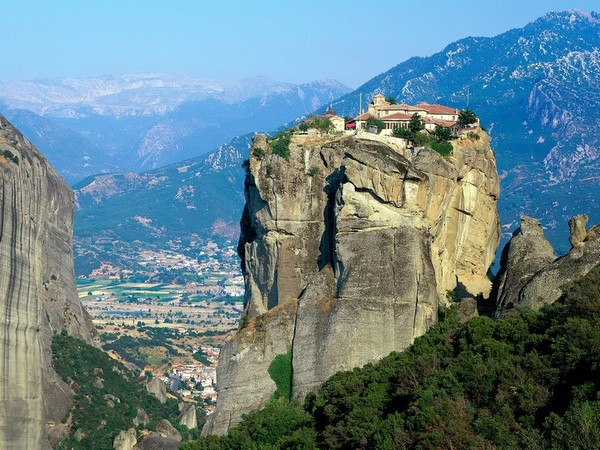
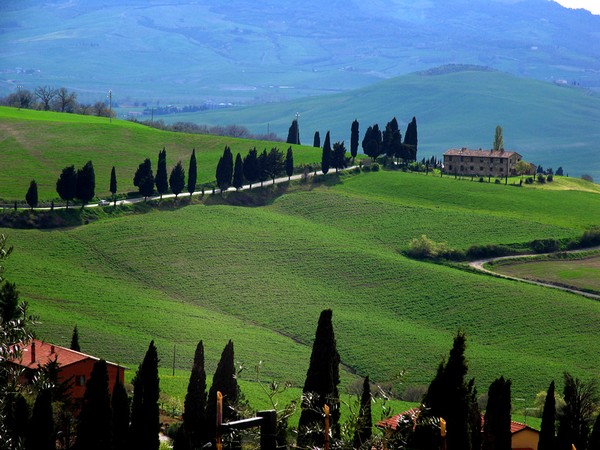
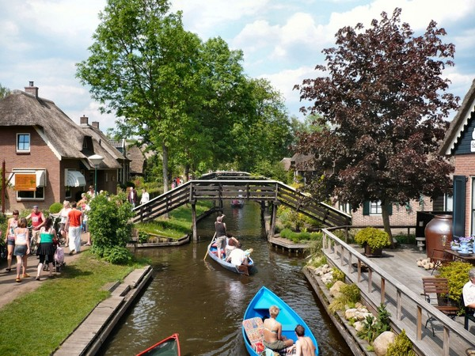
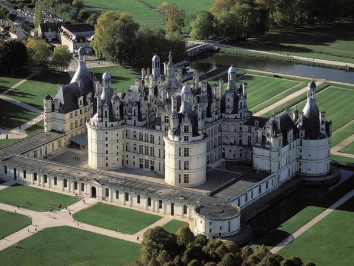

Nalazi se u južnom delu Nemačke i predstavlja dom nekih od najlepših nemačkih gradova kao što su Nirnberg, Augzburg i Rozenhajm. Pored tipičnih srednjovekovnih gradova, Bavarska poseduje prelepe pejzaže u ruralnim oblastima, kao i neverovatne zamkove.
Najlepša turistička destinacija u Nemačkoj
Obalski region na severoistoku Katalonije poseduje izuzetnu klimu kao i izvanredne plaže, pa je tako idealno turističko mesto, naročito leti. Za posetioce koje zanima nešto više od plaže, sunca i mora, Kosta Brava takođe poseduje i mesta koja su zadržala tradicionalni izgled i vrlo su primamljiva.
Gradovi na Kosta Bravi uporedo sa turizmom razvijaju zaštitu životne sredine
Prag se svrstava među najlepše i najočuvanije velike gradove Evrope. Ovaj grad poznat je po svom izvanrednom pivu, kao i kobasicama. Pogled na sjajnu arhitekturu koju Prag poseduje jednostavno oduzima dah.
Za Dubrovnik se može reći da je grad prepun ljubavi u kome se već pri samom ulasku oseća pozitivna energija. Kada ga jednom posetite poželećete da mu se vratite bezbroj puta. Dubrovnik je grad sa dušom.
Ovo je druga najveća rečna delta u Evropi, odmah posle delte reke Volge. Kaže se da je ovo jedno od najlepših evropskih mesta na planeti Zemlji. Delta Dunava krije predivan i nenarušen svet koji postoji od davnina i još uvek je podjednako očuvan kao nekada.
Tradicionalna jela, kuće i običaji ovo mesto čine savršenim za ljubitelje ribolova i one koji traže miran odmor
Ostrvo Sveti Stefan smešten je na Jadranu i već dugi niz godina predstavlja srce crnogorskog turizma. Peščane plaže, sjajna mediteranska klima i izvanredan pogled upravo su ono što ga čini tako neodoljivim.
Meteori predstavljaju skupinu pravoslavnih manastira i jedno od najlepših evropskih mesta. Smatraju se najvrednijom skupinom manastira u Grčkoj, odmah posle Svete gore. Smešteni su na visokim stenama-stubovima i upravo taj neobičan položaj ovo mesto čini tako neverovatnim.
Meteori se nalaze na spisku kulturne baštine UNESKO-a
Toskana predstavlja jednu od 20 regija Italije i njeno najlepše ruralno područje. Poznata je po tradicionalnim vikendicama i palatama, a predivni pejzaži definitivno su nešto čime se stanovnici Toskane mogu pohvaliti.
Toskana je poznata i po svojim izuzetnim vinima
Ovo je mali grad u holandskoj provinciji Overejsel. Ono što ga razlikuje od drugih gradova jeste to što u čitavom gradu nema nijednog puta, a kao prevozno sredstvo koristi se isključivo nečujni električni brodić. Takođe, postoje i biciklističke staze i uski putići za pešake.
Oaza mira i tišine, grad koji je poznat još i kao “Holandska Venecija”
Dolina reke Loare poznata je po dvorcima koji na njoj leže. Smatraju se jednim od najlepših i najraskošnijih dvoraca celog sveta zbog svoje fenomenalne arhitekture kao i seoskog francuskog pejzaža koji ih okružuje.
U ovom području nalazi se oko 300 dvoraca